ML and Data Science Engineer. Fundamentals in Mechatronics Engineering, then a pivot into Computer Science. The through-line in using data to make systems work better, sometimes through an innovative breakthrough, usually through the kind of incremental fix that nobody notices until it scales.
Based in New York City, NY.
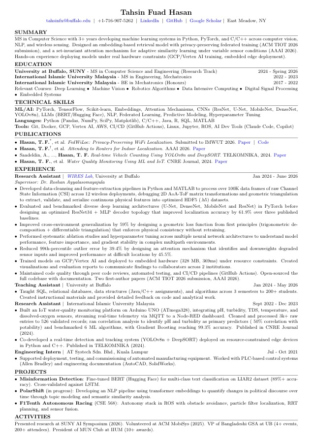
resume.pdf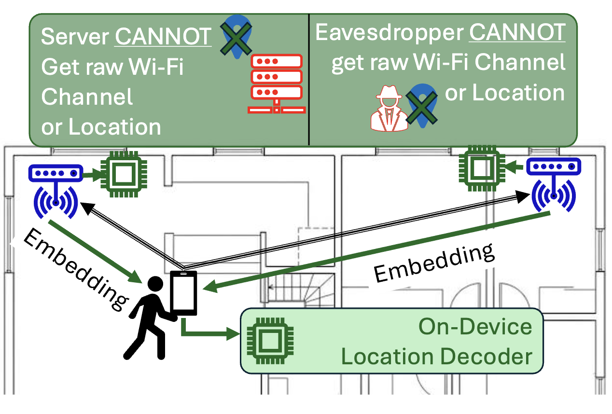
A decentralized indoor localization framework inspired by GPS. Access points process raw WiFi channel state information locally and transmit only non-invertible embeddings to the user's device, which decodes its own location without ever exposing data to a central server. Integrates federated learning so raw data never leaves the edge during training, and a geometric loss function I designed from first principles that enforces physical consistency across access points for generalization to entirely unseen environments. Sub-meter accuracy across 6 environments. Provably private (SSIM < 0.1).
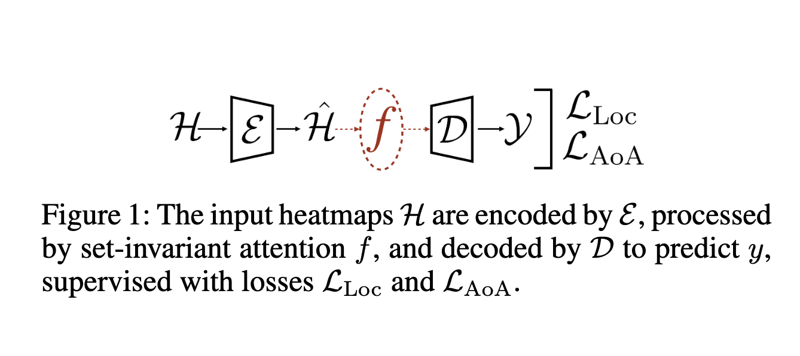
Not all access points contribute equally to localization. Some are blocked, some are noisy, some are redundant. I designed a set-invariant attention mechanism that learns to identify and downweight degraded inputs at inference time, without needing to know which APs are unreliable in advance. Handles variable numbers of access points through fixed-dimensional representations. Reduced 99th-percentile error by 39.4% and improved performance at the hardest locations by 45.5%.
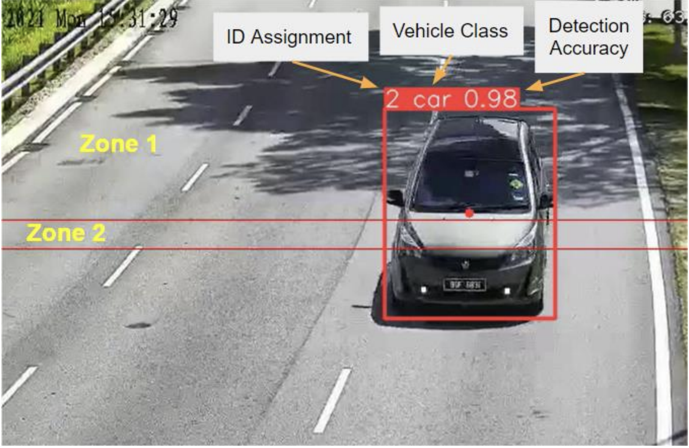
Built a real-time vehicle counting system for traffic monitoring using YOLOv8n for detection and DeepSORT for multi-object tracking across frames. The system had to run on resource-constrained edge hardware, so model selection and optimization were driven by inference speed and memory budget, not just accuracy. Co-developed in Python and C++.
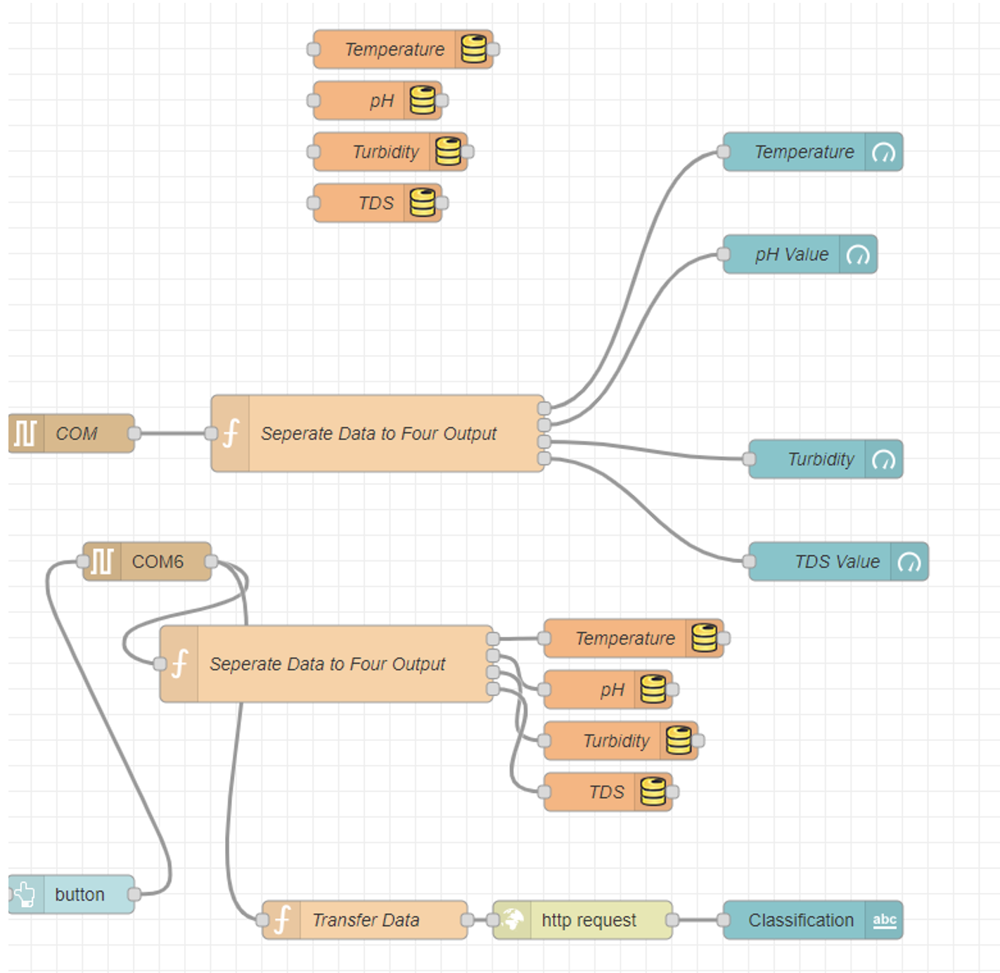
Part of a sustainability-focused research grant. Built the full system from hardware up: integrated pH, turbidity, TDS, temperature, and dissolved oxygen sensors on an Arduino, streamed telemetry via MQTT to a Node-RED dashboard for real-time monitoring, and developed an ML classification pipeline to assess potability conditions. Cleaned 3K+ raw field measurements down to 526 validated records and benchmarked 6 algorithms. Gradient Boosting reached 99.3%.
NLP pipeline measuring how political discourse shifts from persuasion-oriented language toward identity-signalling framing. BERT embeddings, topic modeling, semantic similarity. In progress.
Fine-tuned BERT on LIAR2 for multi-class text classification. 89%+ accuracy, cross-validated against LSTM.
PLC-controlled irrigation with SCADA interface, sprayer robot, and automated threshold alerts. Published in AJOEEE 2021.
Full autonomy stack in ROS: obstacle avoidance, particle filter localization, RRT planning, and sensor fusion.
Circuit design for physiological signal acquisition and heart rate measurement from optical sensors.
Motor driver circuit designed in EAGLE. Board fabrication, soldering, and DC motor integration.
Built end-to-end indoor localization system. Data pipelines, model design, cloud training, edge deployment. Two first-author publications. Open-sourced codebase.
SQL, relational databases, data structures, algorithms. 3 semesters, 200+ students.
Taught debate and formal presentation. Built curriculum from scratch.
IoT water quality monitoring, real-time vehicle detection, automated farming system. Three publications.
Production floor. Automated manufacturing equipment, PLC systems, AutoCAD, SolidWorks.
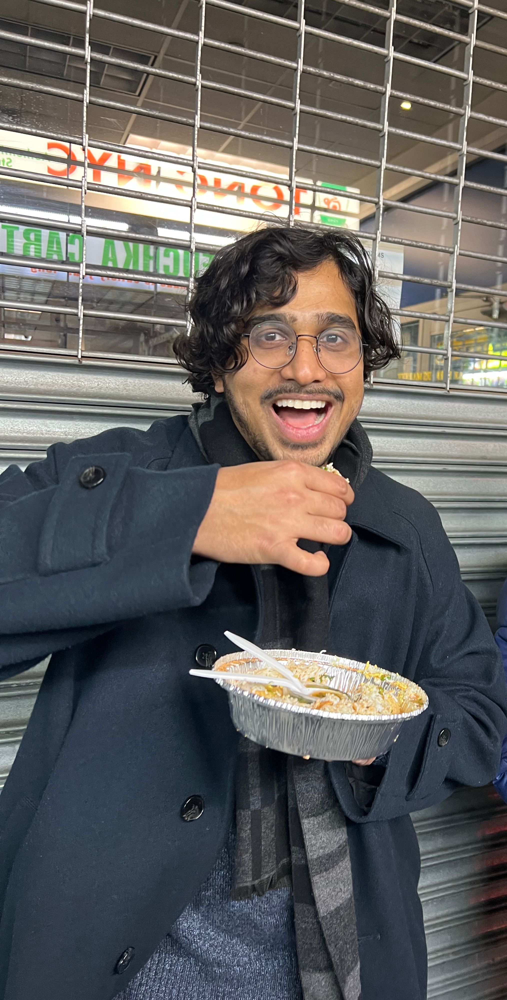
An accidental ML and Data Science Engineer. My first encounter with machine learning was during my final year project under Dr. Tanveer Saleh, where we worked on classifying unstable conditions during CNC turning operations using audio and vibration data. Before that, my interests were firmly in the fundamentals of mechatronics engineering: robotics, sensor circuit design, PLC programming, and industrial automation. That project changed the trajectory.
After graduating with my Bachelor's in Mechatronics, I collaborated with Dr. Tanveer again, this time under Prof. Nassereldeen Kabbashi as head supervisor and Dr. Jahangir Alam as co-supervisor, on a sustainability-focused grant project: building a real-time IoT-based system for monitoring and classifying water potability conditions using machine learning. That became my Master's thesis.
After finishing my Master's, I came across Dr. Roshan Ayyalasomayajula's work on DLoc, which showed you could harness noisy WiFi channel state information for decimeter-accurate indoor localization. I joined his WIRES Lab at UB, where I extended that research into where I extended that research into ATLAS (formerly FedWiLoc): a decentralized localization framework where access points process raw signals locally, transmit only non-invertible embeddings, and the user's device decodes its own location, like GPS. I designed a geometric loss function for cross-environment generalization and integrated federated learning so raw data never leaves the edge. The system achieves sub-meter accuracy across 6 environments while provably protecting privacy. Two first-author papers came out of this work: a submission to ACM TIOT 2026 and a paper at AAAI 2026.
Outside of research, I taught debate and public speaking in Malaysia, served as President of the MUN Club at IIUM (we organized the university's first national MUN conference), and during my time at UB, I was VP of the Bangladeshi Graduate Student Association. I design event posters and organize large-scale events, take photographs, paint when I get the time, and mostly love running.
I'm looking for ML Engineer, Data Scientist, or Data Engineer roles with preference to the NYC metro area. If you're hiring and made it this far, I'd love to talk.
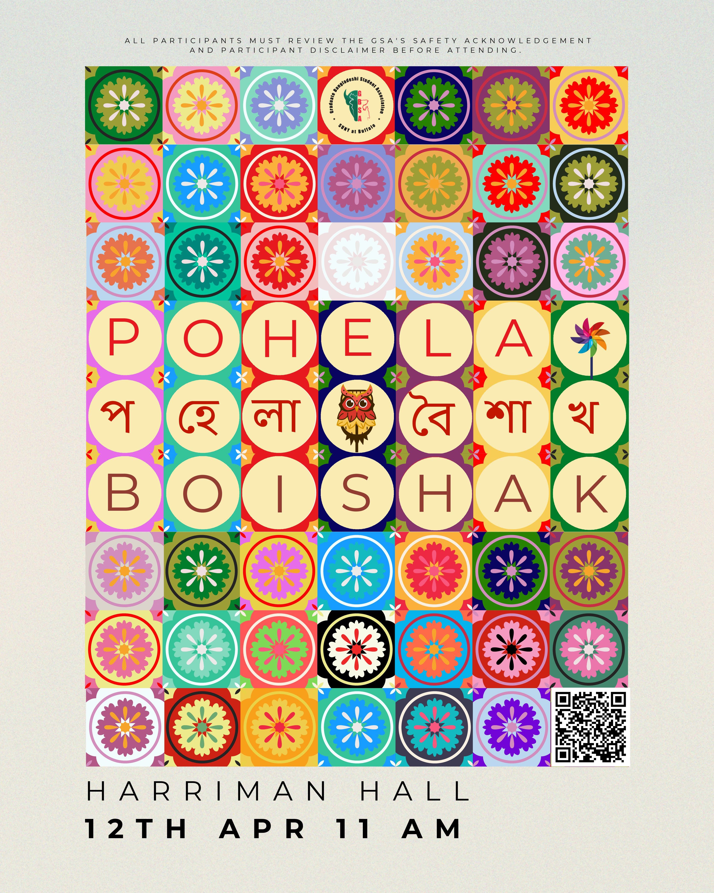
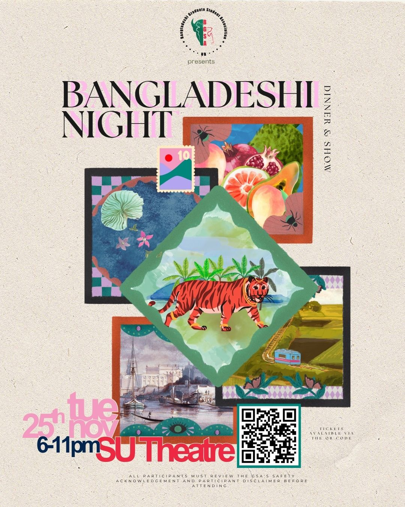
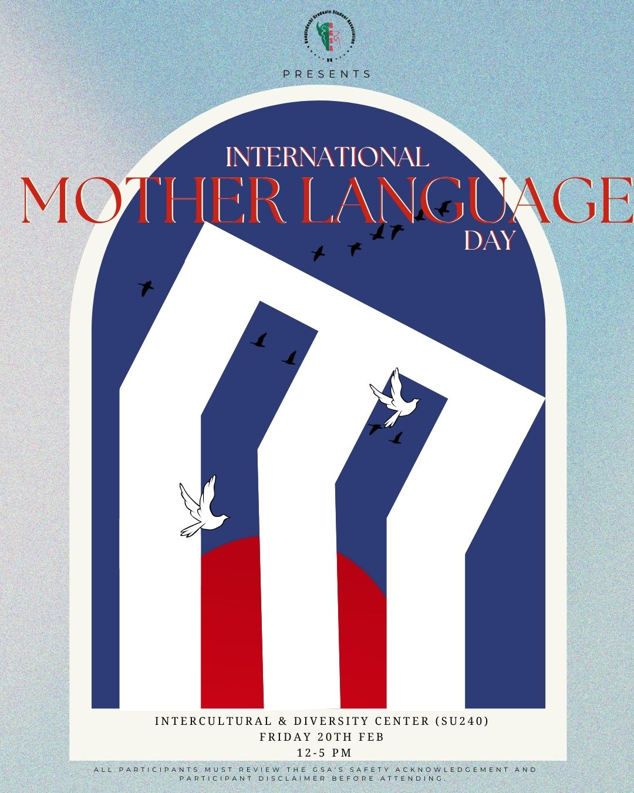
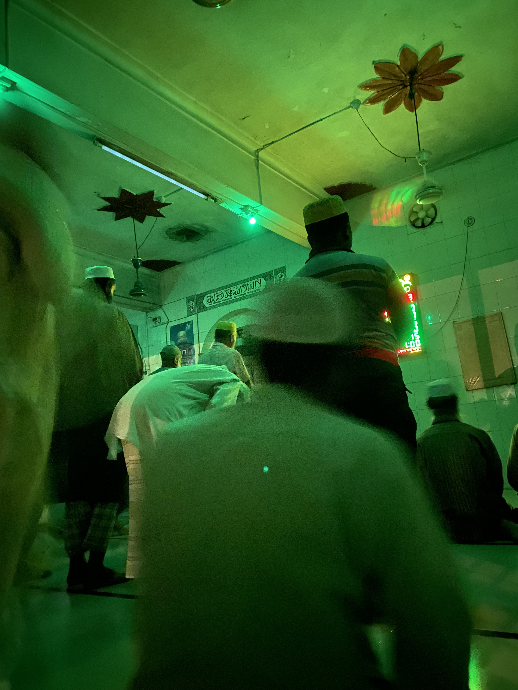
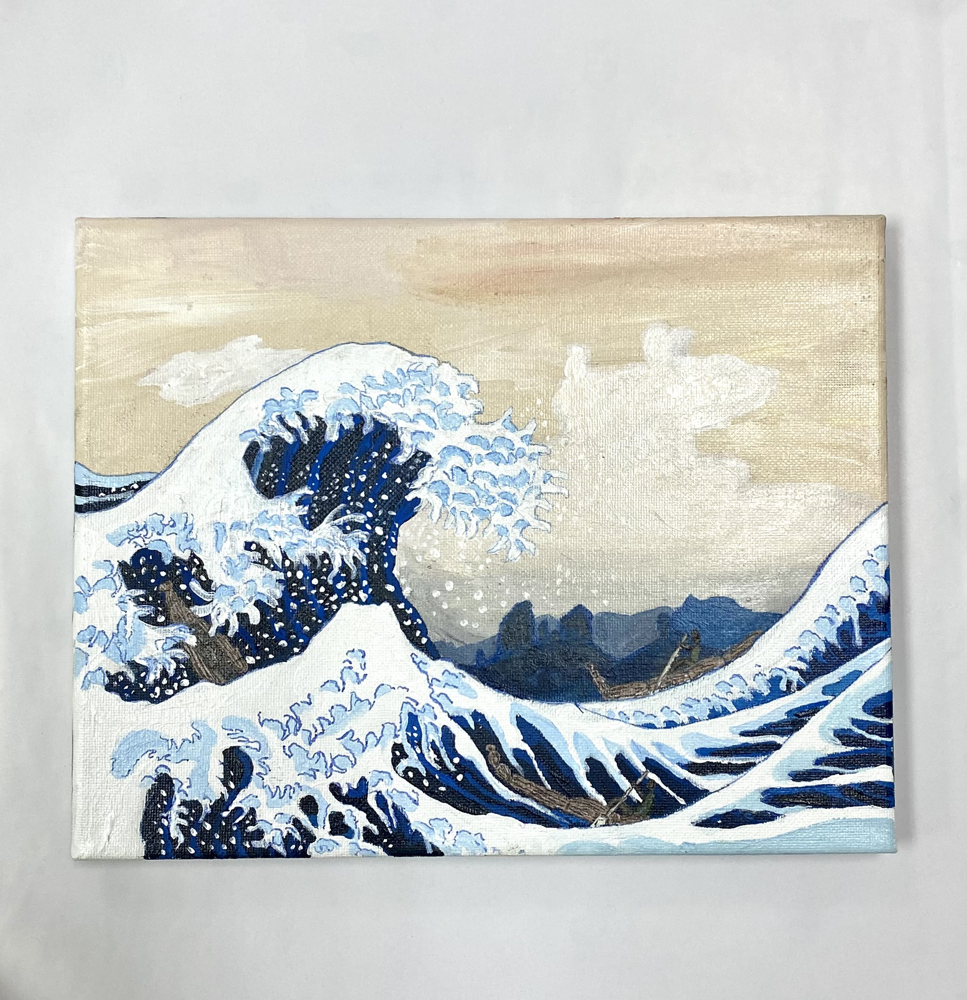
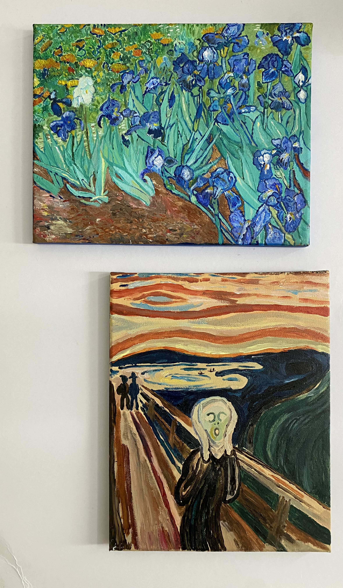
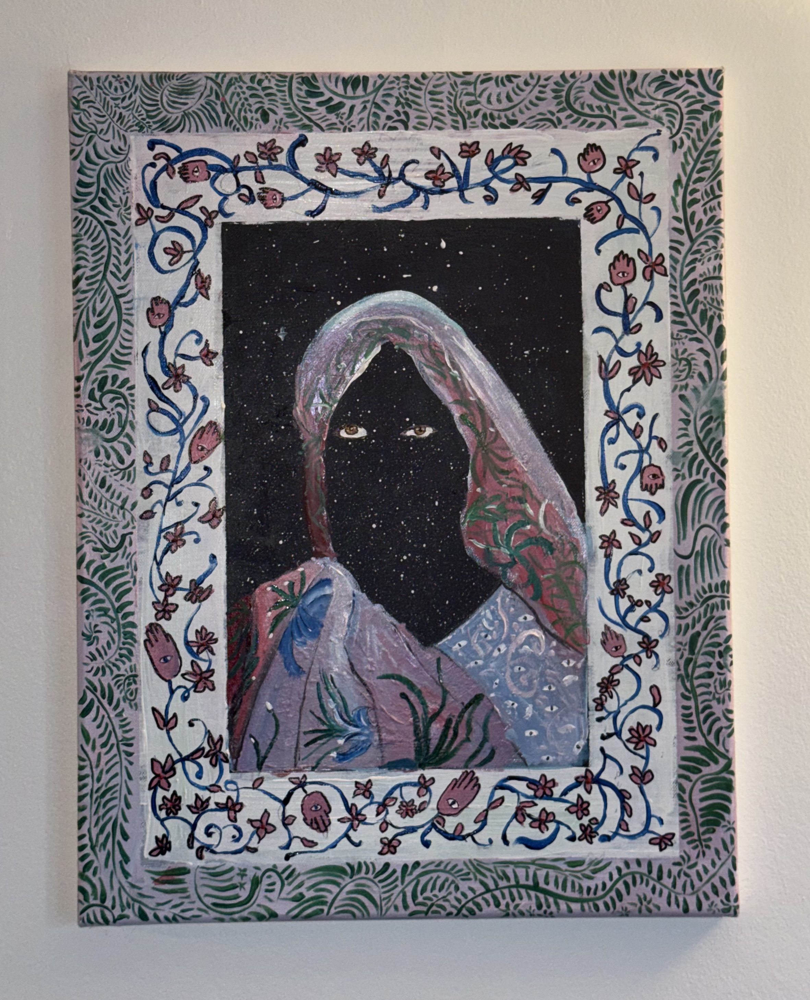